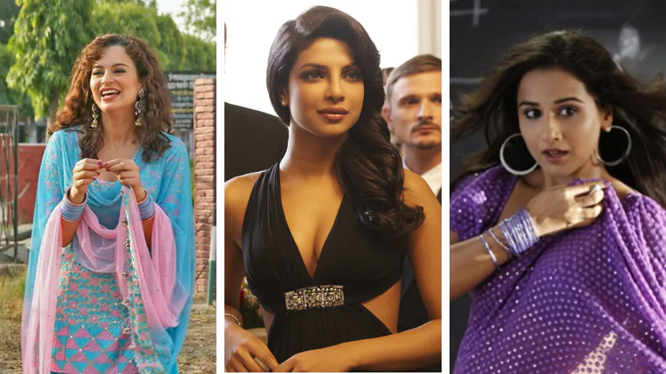

2010 - Rise of fast Fashion
This era was all about mixing tradition with modernity In the 2010s, Bollywood fashion was all about bold glam and cultural flair. From Kangana’s colorful Patiala suits to Priyanka’s red-carpet gowns and Vidya’s retro sarees, stars brought back traditional styles with a modern, fearless twist.